第九章 数据检索与获取
数据获取不是把一份 Excel 表“拿到手”那么简单，而是把研究问题转化为能够被观察、记录和检验的证据。研究者一旦没有界定对象、概念、时间范围与数据来源，后续再精细的清洗、统计或可视化，也无法弥补起点上的偏差。本章从社会科学研究的对象出发，说明如何选择二手数据或自行开展问卷调查，并把问卷设计、抽样、回收、质量控制与后续分析连成一条完整路径。
9.1 从社会问题到可获取的证据
教育研究面对的不是抽象的数字，而是学生、教师、课程、学校和政策情境中的行为、态度、关系与结果。社会科学主题词云把 *social sciences*、*humanities*、*behaviour*、*family*、*health*、*inequality* 等词置于同一画面，提示研究问题既可能来自个体经验，也可能来自组织、制度与文化。数据获取的首要任务，就是把这样一个宽泛主题收束为可回答的问题。
同一主题常有不止一种证据路径。图9-2的研究方式表把调查研究、实验研究、实地研究和文献的定量研究并列，并对应不同的资料收集与分析方法。若要了解某校学生对课程资源的满意度，问卷适合获得可比较的自我报告；若要理解学生在小组讨论中如何协作，观察或访谈更贴近过程；若要比较地区教育投入的长期变化，统计年鉴或开放政府数据往往优于重新发放问卷。方法不是研究问题的装饰，而是证据质量的一部分。
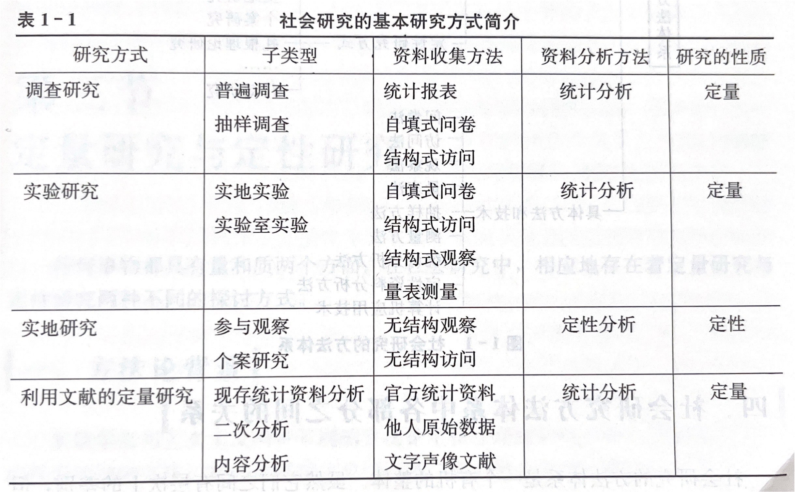
在检索或收集前，至少应回答四个问题：研究对象是谁；核心概念是什么；分析单位是什么；结论准备推广到哪里。分析单位尤其容易被忽略。研究“学生”时，一行数据通常代表一名学生；研究“课程”时，一行可能代表一门课程；研究“学校年度投入”时，一行则可能代表一所学校在某一年。若把不同单位混在同一张表里，后续均值、比例和模型都会失去明确含义。
| 需要先界定的事项 | 示例 | 对数据获取的影响 |
|---|---|---|
| 研究目的 | 描述使用现状、比较群体差异，还是检验预测关系 | 决定需要频数、分组信息、重复测量或多个变量 |
| 研究对象与总体 | 某校本科生、全国高职学生、近十年学校 | 决定抽样框、招募渠道与结论的推广范围 |
| 核心概念 | “学习投入”“科研参与”“数字素养” | 决定沿用何种定义、量表或可观察指标 |
| 分析单位与时间 | 每名学生一次填写；每所学校每年一条记录 | 决定一行代表什么，以及是否能够合并数据 |
| 伦理与可得性 | 是否含未成年人、成绩、联系方式或平台日志 | 决定是否需要知情同意、脱敏、受控访问或改用二手数据 |
9.2 先检索已有数据，再决定是否自行调查
自行发放问卷并不天然优于二手数据。若已有数据的对象、变量、时期和许可条件与研究问题相符，复用数据可以减少受访者负担，也能使研究更容易复核。可优先检索以下来源：论文的补充材料与数据可得性声明、数据论文、政府与国际组织统计库、机构开放数据平台、学科或通用数据仓储，以及软件随附的教学数据集。上一章介绍的数据字典、版本、许可协议与采集说明，在本章同样是判断数据能否使用的前提。
二手数据的“可下载”不等于“可回答问题”。使用前应逐项核对：变量定义是否相同，采集对象是否覆盖目标人群，时间与地理层级能否比较，缺失值表示什么，是否允许再利用和发表。比如“学生参与”可以指问卷中的自我报告、课程平台的登录记录，或参与项目的行政登记；它们不是可以不加说明地互相替代的同一个变量。
| 数据来源 | 适合回答的问题 | 获取后必须检查 |
|---|---|---|
| 论文附带数据、数据论文 | 复现、再分析或扩展既有研究 | 数据字典、论文方法、版本、许可证、引用方式 |
| 政府和国际组织数据 | 区域比较、长期趋势、政策背景 | 指标口径、统计制度变化、行政边界、发布日期 |
| 开放数据仓储 | 某学科可复用数据、代码与材料 | 领域匹配、持久标识、访问限制、文件是否完整 |
| 商业或平台数据 | 行业或平台行为的描述与比较 | 覆盖人群、抽样规则、授权、导出限制与算法口径 |
| 自行调查、观察或实验 | 特定人群的态度、行为、经历和干预反应 | 抽样、测量、知情同意、隐私与现场执行质量 |
已有数据的检索可以按六步执行。第一，把研究问题拆成对象、指标、时间、空间和分析单位，例如“2015—2025年省级普通高校生均教育经费”。第二，按“发布机构官网—政府或国际组织数据库—学科仓储—论文补充材料—通用搜索”的顺序寻找来源，并记录检索词与访问日期。第三，在下载前阅读元数据、指标解释、调查或统计方法、更新频率和许可，不要只凭文件名判断。第四，用少量记录试读字段、单位、缺失码和时间范围，确认一行代表什么。第五，将候选数据与研究问题逐项对照，记录覆盖不足、口径变化、受控访问和伦理限制。第六，为决定使用的数据保存原始文件、稳定链接或标识符、数据字典、许可、版本和校验信息；任何格式转换都另存为工作副本。
这一流程的最低产出不是一个孤立的Excel文件，而是一组能够回答“从哪里来、为何适用、怎样处理、能否复用”的材料。若多个来源都可用，应优先选择定义透明、更新与版本可追踪、分析单位匹配、许可清楚且缺失说明完整的数据。若关键变量不存在、目标人群覆盖不足或访问条件与研究计划冲突，才进入自行调查；“网上没搜到”并不是充分理由。
二手资料不足时，文献检索仍是设计问卷的第一步。不要只搜索“有没有人做过这个题目”，还要查找概念定义、已有量表、变量之间的理论关系、不同人群中的测量做法以及已报告的局限。图9-3展示中文数据库的高级检索：研究者把“学术或科研”与“参与、行为、活动、意愿”等同义词分别放入主题字段，再用 AND 连接。分字段、列同义词、再逐步收窄的做法，能使“寻找题项”从随意浏览变为可追溯的证据搜索。
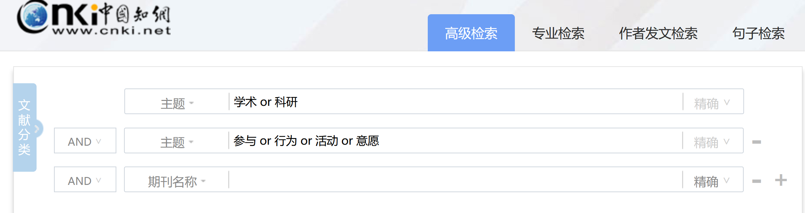
英文文献检索也应服务于概念和测量，而不是只追求检索数量。图9-4把 *academic activity*、*scientific research*、*academic engagement* 等概念组，与 *behavior*、*intention*、*influenc\** 等概念组相连。星号表示词干截断，用于覆盖同一词根的不同形式。读者应特别注意：英文概念之间未必完全等值；翻译、研究对象和教育情境都可能改变题项含义，因此不能机械地把国外量表逐句搬入本土问卷。
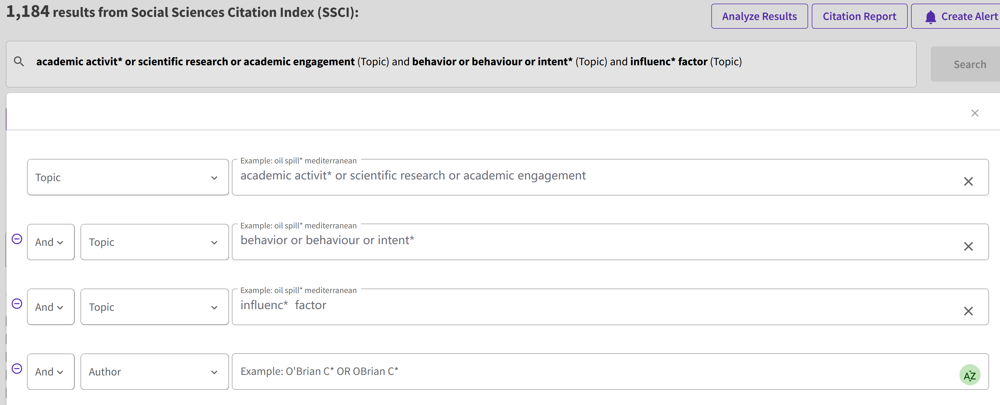
9.3 问卷调查适合回答什么问题
问卷调查是以统一的问题和回答规则，向一组调查对象收集其背景、经验、行为、态度、看法或意愿，并将回答整理为可比较数据的方法。它特别适合回答“是什么”“怎样分布”“不同群体是否不同”“变量之间是否存在预测关系”等问题。问卷能够记录的是受访者在特定情境下的自我报告；它不自动等同于真实行为，更不能仅凭一次横断面填写证明因果关系。
一张有人勾选满意度选项的问卷照片，强调了问卷的“标准化”优势：每个人面对同一套题项，回答可以编码、汇总和比较。但标准化也带来限制。对于“学生为什么在讨论中沉默”“教师如何调整课堂策略”这样需要过程和细节的问题，开放式访谈、观察或学习过程材料可能更合适。混合方法不是为了增加方法数量，而是让不同证据各自承担适合的解释任务。
问卷可以是结构式、半结构式或开放式的。结构式题目预设选项，便于统计和比较；半结构式题目在选项之外留出“其他，请说明”；开放式题目由受访者自由作答，能保留意外信息，但需要后续编码、文本分析或人工判读。三者并非高低之分，应由研究目的和受访者负担决定。
| 题目形式 | 例子 | 优点 | 主要风险 |
|---|---|---|---|
| 单选题 | “您是否使用过学校电子教材系统？” | 编码清晰，适合互斥类别 | 选项不全会迫使受访者作错误选择 |
| 多选题 | “您通过哪些渠道获取课程资料？” | 可记录多种并存行为 | 不应把各选项比例简单相加当作总体比例 |
| 排序题 | “请选出最重要的三项原因并排序” | 可比较相对优先级 | 选项过多会增加认知负担 |
| 量表题 | “我能及时调整学习计划：非常不同意—非常同意” | 适合测量态度、认同、感知与意愿 | 必须说明方向、级数和缺失处理，不能默认等级间距相同 |
| 开放题 | “请说明您最希望改进的服务” | 能发现预设选项之外的内容 | 编码规则和分析过程必须透明 |
9.4 从概念到题项：操作化而非凑题
一份好的问卷不是从“写几个问题”开始，而是从概念化和操作化开始。概念化是明确研究中某个词究竟指什么；操作化是把这个概念转化为可观察、可回答的指标和题项。以“大学生科研参与”为例，研究者要先决定它是已经发生的行为、参与意愿，还是由行为、情感和认知投入共同构成的多维概念。不同定义会得到不同题项，也会导向不同结论。
| 层次 | 需要明确的内容 | 示例 |
|---|---|---|
| 研究问题 | 想描述、比较还是解释什么 | 哪些因素与本科生科研参与意愿相关？ |
| 构念 | 抽象概念的工作定义 | 科研参与意愿：愿意在未来投入时间参与科研活动的倾向 |
| 维度 | 构念由哪些方面组成 | 行为经验、兴趣与价值、资源支持、导师互动 |
| 指标 | 能够直接回答的观察点 | 是否参加项目；是否能获得导师指导；是否认为科研有价值 |
| 题项 | 具体的文字、时间范围和选项 | “在未来一学年，我愿意申请或参与科研项目。”五级同意量表 |
这份科研投入问卷的题项清单先按行为、情感、认知等维度分组，再为每个维度配置多条具体陈述和编号。这样的版式传达了一个重要原则：一个多维构念不能由一句笼统提问独自承担。多个题项不是为了堆高样本量，而是为了覆盖概念的不同侧面，并在后续检查它们是否确实在测量同一构念。
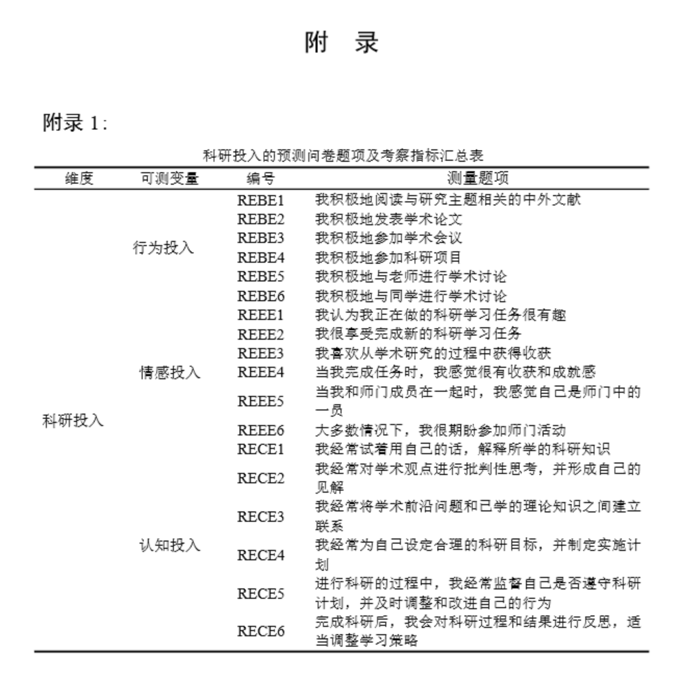
量表题最常见的形式是李克特式同意度量表。图9-7以食堂服务为例，将“非常同意”到“非常不同意”编码为 5 至 1；其中若干负向陈述采用相反编码方向。它提示两个常见错误：第一，把“正向”和“负向”题项混在一起后忘记统一编码方向；第二，认为只要有多个题项就可以直接求总分。负向题可以帮助检查机械作答，但若措辞过于绕，反而可能测量的是阅读困难。是否保留、怎样反向计分，都应在数据字典和分析脚本中明确记录。
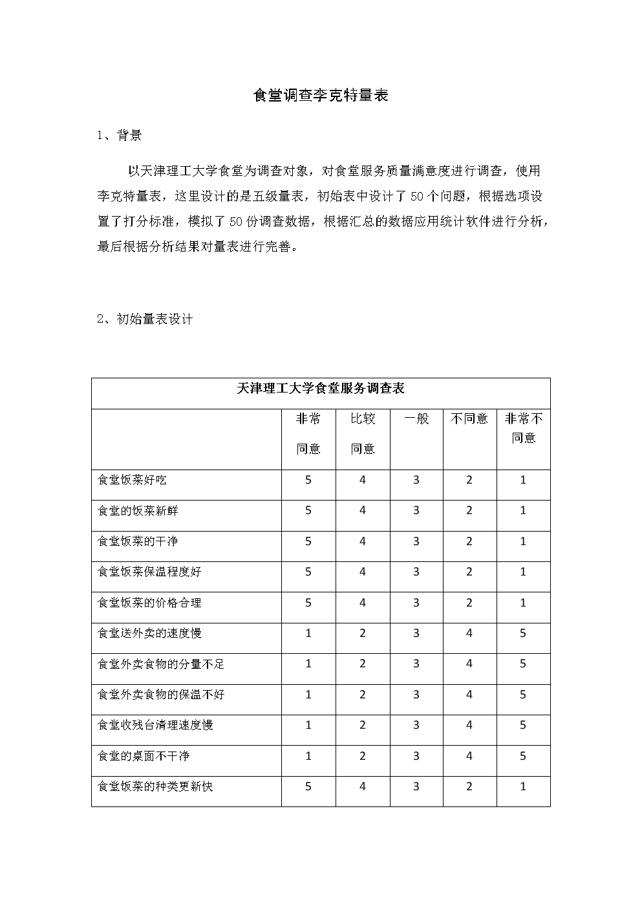
题项文字应具体、简短、只问一个概念，并使用目标人群能稳定理解的语言。国际调查研究协会 AAPOR 的问卷设计建议同样强调单一概念、避免诱导性措辞、让封闭题选项互斥且尽量穷尽，并根据情境考虑“不知道”“不适用”或中立选项。下列改写展示了这一原则。
| 容易出问题的问法 | 问题所在 | 较好的改写 |
|---|---|---|
| “您是否认为教师讲得生动而且作业合理？” | 一题询问两个概念，无法知道受访者在回答哪一个 | 分为“教师讲解是否有助于理解”和“作业量是否合理” |
| “您是否支持学校尽快改进落后的平台？” | “落后”预设了负面立场 | “您认为现有平台在哪些方面需要改进？” |
| “您经常使用平台吗？” | “经常”没有时间范围 | “过去四周，您平均每周登录该平台几天？” |
| “您的收入是多少？” | 可能敏感且缺少拒答路径 | 说明用途与保密方式，使用合理区间并提供“不愿回答” |
9.5 用文献和预调查校正测量
借鉴成熟量表并不意味着复制粘贴。先查中文研究以理解本土术语与情境，再查外文研究以追溯原始定义、量表开发过程和跨群体使用情况；随后记录每个题项的来源、原文、翻译、删改理由和授权要求。若调整了对象、语境、时间范围或回答选项，就应把它视为一次新的测量设计，而不是宣称原量表的所有性质自动成立。
该问卷附录把“科研投入”的题项与“家庭支持、导师互动、同伴互动、科研环境支持、科研动机和科研效能感”等影响因素分栏列出。它不仅是题库，更是一张研究设计图：每一组题项对应一个构念，构念之间的预期关系决定日后需要比较、回归还是结构模型。因而，先想清楚拟回答的问题，再决定题项和变量；不要在数据回收后才从大量问题中临时拼出假设。
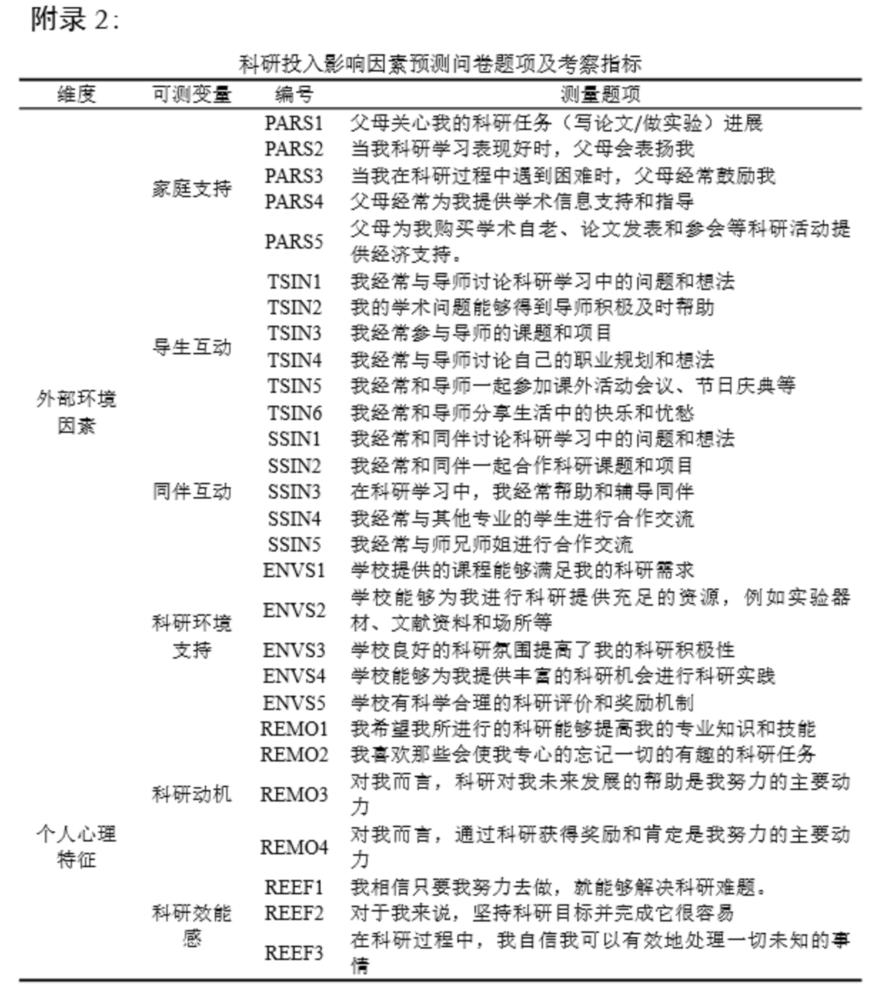
预调查是让目标人群实际完成初稿，并据此修订问卷的过程。它至少要检查四件事：受访者是否把题目理解为研究者想问的含义；选项是否缺失、重叠或顺序不合理；完成时长和跳转逻辑是否可接受；题项回答是否高度集中、频繁缺失或引起不适。可以在填写后追问“你如何理解这道题”“你为什么选择这个选项”，以区分题项本身的问题与真实分布。预调查样本并不承担正式推断任务，不能因为数字“好看”就直接并入正式样本。
9.6 抽样、样本量与推广边界
总体是研究者希望描述或推断的完整对象集合，样本是从中实际获得资料的一部分。图9-9用大圆表示包含不同特征个体的总体，再以虚线小圈和箭头表示抽取到样本。它的教学重点不是把小圆画得多么“漂亮”，而是提醒研究者：样本是否能代表总体，取决于进入样本的规则，而不是只取决于人数。
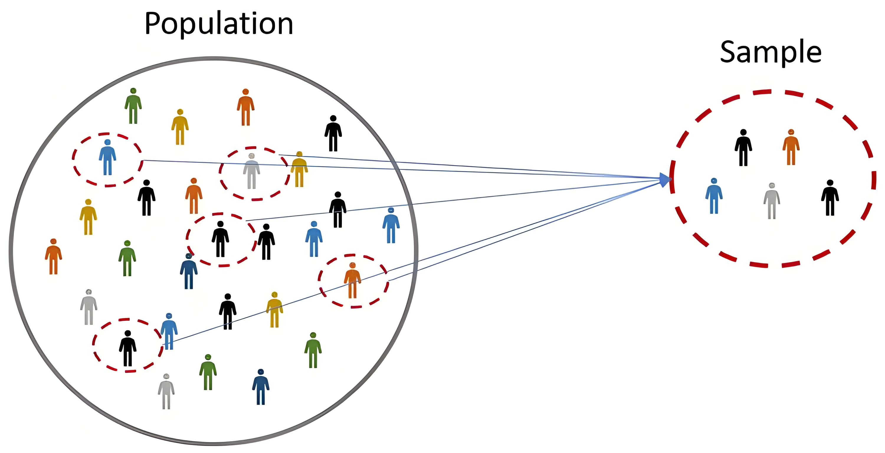
常见的概率抽样包括简单随机抽样、系统抽样和分层抽样。它们的共同点是总体中每个单位被抽中的机会可定义，因而较适合对总体作统计推断。教育研究中受条件限制，方便抽样、滚雪球招募和网络链接扩散也很常见；这些方法可以用于探索特定群体或检验理论关系，但应如实写明样本来自何处，避免将“本校愿意作答的学生”表述为“所有大学生”。
样本量没有脱离设计的万能门槛。量表题目数的若干倍、结构模型的经验规则都只能作为粗略起点，不能替代研究前的效应大小、模型复杂度、预期缺失与统计功效判断。小样本可能使估计不稳定，样本过于同质也会削弱比较；大样本则不能修复错误题项、选择偏差或低质量作答。可行的做法是：说明总体规模和抽样方式；预先设定最低有效样本要求；根据计划分析的模型、分组数量和可获得资源评估样本量；在报告中同时呈现样本构成与局限。
9.7 发放、回收与数据质量控制
在线问卷平台可以处理题型、跳转、随机呈现、进度控制、回收和导出，降低了执行门槛，却不会自动保证研究质量。选择平台前，应确认是否支持匿名或分离保存联系方式、是否能设置筛选和跳转逻辑、是否允许以通用格式导出、数据存放在哪里、是否会收集不必要的设备或定位信息。涉及未成年人、成绩、健康、身份或其他敏感信息时，应先取得必要的伦理审批或机构许可，向参与者清楚说明研究目的、可能风险、退出方式、保存期限和联系方式。
开始页的知情说明应让参与者在作答前知道：谁在进行研究；为什么收集这些信息；预计用时；哪些问题可跳过；资料如何去标识化、保存和使用；是否有补偿；如何撤回或咨询。不要把“提交即同意”当作对所有情形都足够的伦理安排。对于无法公开的受限数据，也应保存数据字典、版本和访问条件，以便在合规范围内复核。
回收后台按“填写所用时间小于60秒”筛选记录，并在表中显示提交时间、时长、来源和部分作答字段。这种筛选能帮助发现异常快答，却不能单独证明一份问卷无效：不同设备、跳题和题目数量都会影响时长。更稳妥的做法是把时间、注意力题、逻辑一致性、关键题缺失、重复提交和开放题质量等线索结合起来，并在正式分析前预先写明规则。
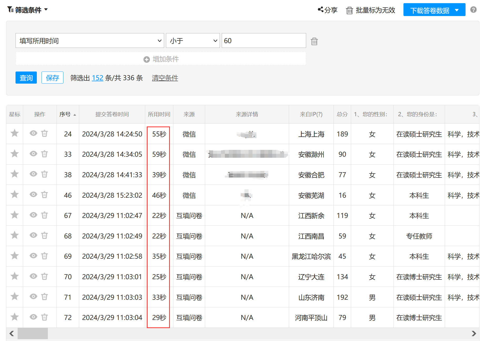
| 检查线索 | 可采用的规则示例 | 处理时的注意事项 |
|---|---|---|
| 完成时长 | 低于预调查所观察到的合理下限时标记复核 | 不要把任意整数当作普遍标准；跳转题会缩短时长 |
| 筛选题与逻辑题 | 不符合纳入条件，或前后回答互相矛盾 | 应区分真实变化、理解困难与无效作答 |
| 关键题缺失 | 核心变量缺失超过预先规定比例 | 区分“拒答”“不适用”“系统漏答”和空白 |
| 规律性作答 | 长量表全选同一选项、反向题完全矛盾 | 结合题项内容与完成时长，不要只因同分就删除 |
| 重复记录 | 同一匿名标识、邀请链接或设备信息出现异常重复 | 不应以 IP 地址单独识别个人；需尊重隐私与共享设备情形 |
| 开放题质量 | 与题目无关、重复粘贴或明显机器生成文本 | 要保存判定规则和删改数量，避免按立场筛选回答 |
数据获取记录应与回收同步建立。记录数据名称、版本、来源、访问日期、总体与纳入条件、发放渠道、问卷版本、回收数量、有效规则、清洗责任人、变量说明、许可和伦理限制。AAPOR 的报告与透明度建议也提醒研究者：回应率或参与率本身不足以判断是否存在未回应偏差，但规范记录样本处置是理解这一风险的起点。
9.8 让数据结构服务于分析问题
数据获取阶段就应预想“这份数据能回答什么”。图9-11把量表研究拆成样本背景、样本特征、指标归类、信度、效度、变量描述、相关、假设与差异等环节，并分别连接频数、描述统计、因子分析、相关、回归、方差分析、卡方检验等方法。图的价值不在于提供一张固定菜单，而在于强调：研究问题、变量类型、测量质量与分析方法必须相互匹配。
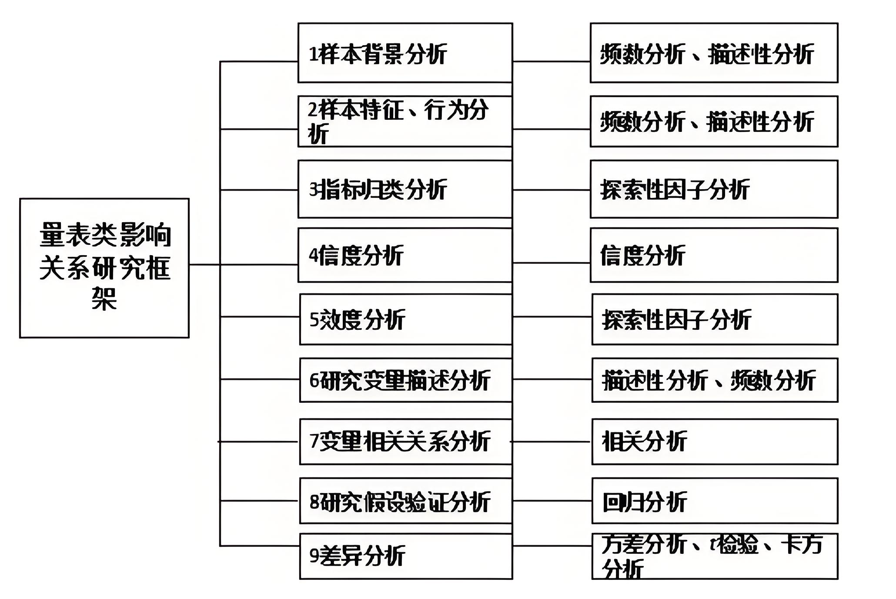
| 想回答的问题 | 数据与设计前提 | 常见的起点 | 结论边界 |
|---|---|---|---|
| 样本是谁、现状如何 | 分类变量、计数或量表得分；样本来源清楚 | 频数、比例、均值、分布图 | 描述的是获得样本，不自动代表更大总体 |
| 不同群体是否不同 | 明确分组变量与结果变量；比较条件适当 | 交叉表、卡方检验、均值差异检验 | 显著差异不等于群体本质不同，也可能受混杂影响 |
| 哪些因素与结果相关 | 有理论支持的变量、足够样本与适当测量 | 相关、线性回归或 Logistic 回归 | 预测关系不等于因果效应 |
| 多个题项能否反映一个构念 | 题项有共同理论定义，编码方向一致 | 信度分析、探索或验证性因子分析 | 指标达标不能替代内容效度与理论判断 |
| 一组构念之间的路径是否符合理论 | 先有理论模型和合适的测量模型 | 结构方程模型、路径分析 | 箭头表示假设关系；横断面问卷通常不能单独确证因果 |
| 机制或条件是否不同 | 事前提出中介或调节理论，变量测量可靠 | 间接效应、交互项、分组或多组模型 | 不应因为变量“处在中间”就声称存在中介 |
描述、差异与分类结果
描述性分析首先回答样本“由谁构成、发生了什么”。应报告有意义的背景变量、缺失情况和关键行为的分布，而不是把所有平台自动生成的图表逐一粘贴。比较两个分类变量时，交叉表与卡方检验常用；例如比较不同性别学生是否选择某类理财产品，得到较大的 *p* 值只表示在该样本和模型条件下没有足够证据拒绝“无关联”的假设，不能证明两个群体完全相同。
当因变量是类别时，模型也必须与类别结构相符。二元结果如“愿意／不愿意继续使用”可考虑二元 Logistic 回归；无大小顺序的多类别结果与有序等级结果，需要不同的模型设定。无论使用哪种模型，都要写清参考类别、变量编码、样本量、置信区间和模型诊断。不要只根据一列显著性数字断言某个因素“有影响”。
信度、效度与构念测量
信度关注同一组题项在当前研究中的一致性或稳定性；效度关注题项和证据是否支持研究者对构念的解释。二者相关但不能互相替代。Cronbach's α 常用于评估内部一致性，但不是量表“质量合格证”：它会受到题目数、题项冗余、样本和构念维度的影响。因子载荷、KMO、Bartlett 检验、组合信度、平均方差提取等数字也都需要与测量模型、样本和理论共同解释。
多元回归示意图以多个自变量指向一个连续因变量，直观说明“在其他变量一并进入模型后”的预测思想。问卷设计因此应预先为关键解释变量、结果变量与必要控制变量保留合适题项；事后从一长串问题中筛选出“显著”的变量，容易夸大偶然发现。回归与聚类的具体建模和诊断将在第十一章展开。
从题项到理论模型
结构方程模型适合处理“看不见但可由题项反映的构念”及其理论关系。图9-13用方框与箭头连接退货政策、感知质量、感知风险和购买意愿，虚线箭头表示调节假设。迁移到教育研究时，可以把方框理解为“教师支持”“学习投入”“使用意愿”等理论构念；每个构念仍需由明确题项测量。模型越复杂，对理论、样本、测量质量与报告透明度的要求越高。
PLS-SEM 是结构方程模型的一种估计路径，可在 SmartPLS 等软件中实现。软件界面把变量、题项和连线组织为模型图，并可输出估计与重抽样结果；但便捷的界面不减轻研究设计责任。SmartPLS 的算法说明指出，PLS 路径建模通过迭代估计指标权重与构念关系；这并不表示它可以绕过缺失处理、量表质量、模型设定或因果识别问题。软件选择应服务于方法与理论，而不是反过来决定研究问题。
中介效应讨论的是理论上自变量如何经由中介变量与结果变量相连。图9-14把 X 到 Y 的总关系拆分为 X 到 M、M 到 Y 以及控制 M 后 X 到 Y 的直接关系。只有在理论、研究时序、测量和统计证据共同支持时，M 才可被解释为可能机制；一次同时测量的横断面问卷通常难以单独排除反向关系和共同原因。
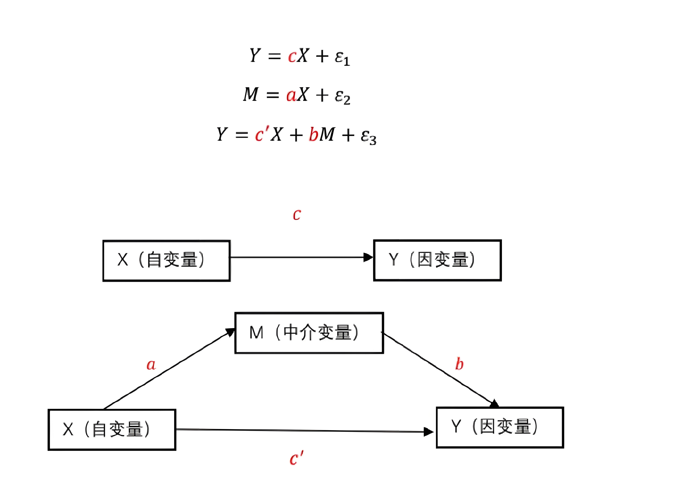
调节效应回答的是“在什么条件下，X 与 Y 的关系会改变”。图9-15以两条代表不同性别的线展示：随着社会取向自我价值感从低到高，主观幸福感的变化趋势可能不同。阅读这类图时，应看两条线是否平行、差异出现在什么范围，并结合交互项和不确定性判断；不能仅凭两条线相交就断定存在稳定的调节作用。
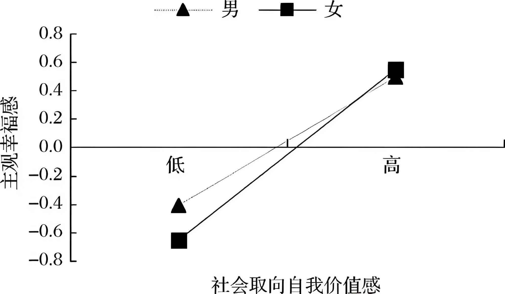
9.9 获取完成后的交接清单
问卷回收并不是数据工作的终点，而是数据管理与清洗的起点。将原始导出文件只读保存，另存一份工作副本；单独保存题项文本、变量名、编码、反向计分、跳转逻辑、有效样本规则和版本变动；不要在原始表中直接覆盖修改。第十章将处理重复、缺失、错误和不一致记录；第十一章将进一步讨论回归与聚类；第十二章则把可靠的数据与结果转化为清楚的图表。
| 材料 | 应包含的内容 | 后续用途 |
|---|---|---|
| 原始数据 | 原始导出文件、获取日期、只读备份 | 核对清洗是否改变了记录 |
| 数据字典 | 变量名、题项全文、类型、取值、缺失码、反向计分 | 清洗、分析、复现与写作 |
| 样本与回收记录 | 总体、纳入条件、渠道、发放日期、回收与有效规则 | 报告样本来源和推广边界 |
| 问卷版本与逻辑 | 知情说明、筛选题、跳转、随机化、修订记录 | 解释不同受访者为何看到不同题目 |
| 合规说明 | 同意方式、脱敏措施、访问权限、保存期限、许可限制 | 保护参与者并决定数据能否共享 |
| 分析计划 | 研究问题、主要变量、预定比较或模型、例外处理 | 减少事后选择性分析 |
常见误区
第一，先建一个问卷页面，再倒推研究问题。第二，把文献中的题项拼接在一起，却没有统一构念、对象、时间范围和编码方向。第三，以“样本很多”代替抽样说明。第四，用方便样本得出面向全国或所有学生的结论。第五，把快速作答或同分回答一律删除，却没有预先规则和记录。第六，把横断面问卷中的相关、回归或路径系数直接写成因果。第七，只保存清洗后的表格，丢失原始数据、问卷版本和数据字典。
本章小结
可靠的数据获取始于研究问题，落实于清楚的概念、合适的来源、可解释的抽样与透明的记录。对于问卷研究，题项质量、样本进入机制、回收过程、伦理保护和预想的分析路线共同决定数据能说什么。问卷平台、统计软件和结构模型都只是工具；真正使研究可相信的，是研究者能够说明数据从哪里来、每一个变量是什么意思、谁被纳入或遗漏，以及结论在哪些边界内成立。
思考与练习
- 选择一个教育问题，分别说明使用公开统计数据、问卷、访谈或混合方法时，能够回答什么、不能回答什么。
- 将“学生数字素养”操作化为至少三个维度；为每个维度写两条题项，并标注回答选项和编码方向。
- 为一项线上问卷拟定总体、抽样框、招募渠道和有效样本规则，说明其中最可能出现的选择偏差。
- 找到一份已发表研究的问卷或量表，记录其原始来源、调查对象、题项改写、样本构成和报告中未说明的信息。
- 将一个“X 影响 Y”的问题改写为描述、差异、预测、中介和调节五种不同研究问题，并指出每种问题需要在数据获取阶段额外准备什么。